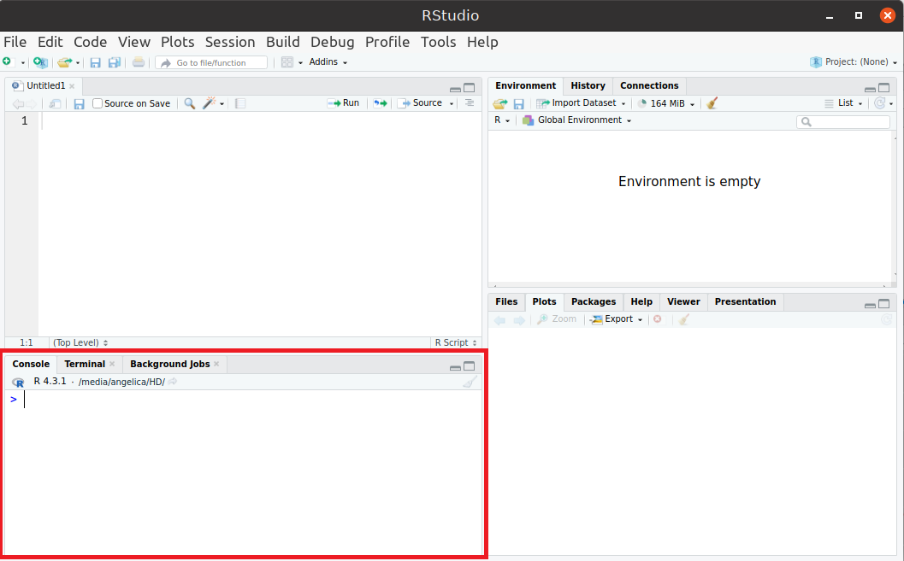

1.3 Estrutura do RStudio
O Rstudio é dividido em quatro janelas principais:
1. Console (Janela Inferior Esquerda):
- Permite executar comandos R diretamente.
- Exibe resultados e mensagens (saídas de funções, erros, avisos).

Dicas:
- Para rodar um código, digite e pressione Enter.
- Use as setas ↑ e ↓ para acessar comandos anteriores.
- O atalho Ctrl + L (Windows/Linux) ou Cmd + L (Mac) limpa o console.
Exemplo Digite os códigos abaixo no Console. Use as setas ↑ e ↓ para acessar comandos anteriores. Limpe o console.
x <- 3 # pressione Enter
y <- 2 # pressione Enter
print(x) # pressione Enter
print(y) # pressione Enter2. Editor de Scripts (Janela Superior Esquerda):
- Editor de arquivos R (.R), RMarkdown (.Rmd), Shiny Apps, entre outros.
- Permite escrever e salvar códigos para execução posterior.

Dicas:
- Ctrl + Enter → Executa a linha atual.
- Ctrl + Shift + Enter ou Ctrl + A e Ctrl + Enter → Executa o script inteiro.
- Ctrl + S → Salva o arquivo.
- Para criar um novo script: File → New File → R Script.
Exemplo Digite os códigos abaixo no Editor de Scripts. Utilize Ctrl + Enter para compilar cada linha separadamente. Utilize Ctrl + Shift + Enter (ou Ctrl + A e Ctrl + Enter) para compilar todo o script. Salve o arquivo em algum repositório.
a <- -1
b <- 5
a
b3. Ambiente e Histórico (Janela Superior Direita):
- Environment: Mostra objetos carregados na sessão (data frames, variáveis, funções).
- History: Lista de comandos executados no console.
- Connections: Permite conectar-se a bancos de dados.

Dicas:
- Use
ls()no console para listar os objetos carregados. - Para limpar o ambiente:
rm(list = ls())
Exemplo Consulte as abas Ambiente e Histórico. Visualize as variáveis criadas e funções utilizadas. Utilize rm(list = ls()) para limpar o ambiente.
4. Janela de Arquivos, Plots, Pacotes e Ajuda (Janela Inferior Direita):
- Files: Gerenciador de arquivos do diretório de trabalho.
- Plots: Exibe gráficos gerados pelo R.
- Packages: Lista pacotes instalados e permite carregar ou instalar novos.
- Help: Ajuda e documentação de funções do R.
- Viewer: Exibe documentos HTML, visualizações interativas (como Shiny).
- Presentation: Permite criar apresentações de slides (RMarkdown).

Dicas:
- Instalar um pacote:
install.packages("nome_do_pacote")ou clicar no botãoInstallna aba Packages. - Carregar um pacote:
library("nome_do_pacote")ou “marcar” o pacote na aba Packages. - Visualizar ajuda de uma função (ou pacote):
?nome_da_funçãoouhelp(nome_da_função). - Listar pacotes carregados:
search()


Exemplo
- Copie e cole o código
plot(1:10). Visualize o resultado na aba Plots. Exporte o gráfico. - Instale e carregue o pacote
ggplot2. Encontre a documentação do pacote no cran do R. - Consulte na aba help a documentação da função
mean(). Qual argumento permite ignorar valoresNAnos cálculos de média?
1.3 Exercícios da Sessão
1. No Console, execute os seguintes comandos e observe os resultados:
x <- 10
y <- 5
soma <- x + y
somaQual foi o valor impresso no console? Use o comando ls() no console, o que ele faz?
2. No Editor de Scripts, crie um novo arquivo R: File → New File → R Script. Copie e cole o seguinte código no script:
# Criando um vetor
numeros <- c(1, 2, 3, 4, 5)
# Calculando a média
media <- mean(numeros)
# Mostrando o resultado
print(media)- Salve o script como meuscript.R
- Execute o script inteiro usando Ctrl + A e Ctrl + Enter.
- O que foi impresso no console?
3. No Editor de Scripts cole este código e execute:
x <- seq(-10, 10, 0.1)
y <- sin(x)
plot(x, y, type = "l", col = "blue", main = "Gráfico de Seno")- Vá até a aba Plots e veja o gráfico gerado.
- Clique em
Exportpara salvar o gráfico.
4. Na aba Packages, instale e carregue o pacote de manipulação de dados dplyr. Encontre a documentação do pacote no Cran do R.
5. No Console do RStudio, consulte a documentação das seguintes funções:
?mean
?sd
?sum
?seq
?sample- Descreva resumidamente o que faz cada função.
- Anote os principais argumentos de cada função.